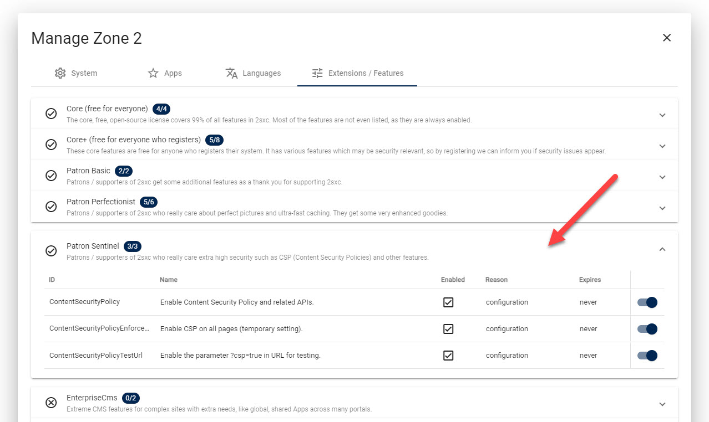

Content Security Policy (CSP) Parts in 2sxc
Content Security Policy (CSP) is a security policy that helps you to protect your web application from cross-site scripting attacks.
This should give you an overview as to the parts that make CSP work in 2sxc with Dnn and Oqtane.
2sxc Implementation
2sxc uses the following parts to make it work
- Global Features which can be enabled/disabled
- CSP Settings at Site / Global level
- Settings at the App-Level which will be included automatically
- Policies for different user groups
- Automatic White-Listing of Trusted Resources
- C# / Razor APIs for advanced scenarios
- Special
all-srcshorthand - Test configurations which can be activated during development
- Really Smart CSP Engine which combines everything to make the rules you need
- turnOn JavaScript to run scripts which need Razor data
- DNN Page Integration
- LightSpeed Integration
Global CSP Features
You can manage CSP features in the system administration to enable/disable just the rules you want.
For example, you could only enable dev-rules until you are happy with the configuration.
Note
The CSP features are very advanced features.
They are exclusive to patrons who support 2sxc.
To use them, you must enable the bundle Patron Sentinel.
Settings
Global and Site Settings
You can configure CSP settings at the site- and global-level. Anything that is configured at global, but not site-level, will use the global settings.

With these settings you can:
- Enable/Disable CSP
- Determine if it's report-only or fully enforced
- Set a bunch of rules which will be applied
Note that if you set CSP rules at the site level, they will apply to that site and not inherit global settings any more. This is by design, because it could lead to very confusing, hard-to-debug configurations.
App Settings
The same configuration which is applied to the site or global can also be configured at the app-level. The main difference is that this will only be applied to pages which have that App. In addition, these settigs will be mixed in with the site/global settings.
Tip
All default 2sxc Apps have been built with CSP in mind, so all of them already include the CSP settings they need. You may need to get the latest releases to see this in action.
Content Security Policies by User Groups
Different users typically need different CSP policies. For example, we can really harden the Content Security Policy for end-users, as we can clearly restrict what they need and can do. Admins and super-users cannot work with the most restrictive rules, because some of the admin-functionality needs more permissions.
2sxc has policies for these user groups:
- SystemAdmin - a policy which will only apply to system admins
- SiteAdmin - a policy which will only apply to site admins
- Anonymous - a policy which will only apply to anonymous users
- Default - the default policy which is used if no other policy is defined
- Dev - a policy which will only apply if the url has
?csp=dev
Automatic White-Listing Trusted Resources
As a developer, you want your code to just-work.
So ideally any JS/CSS you add, is automatically white-listed.
But we cannot just white-list every <script> tag in your code, as that would make CSP useless again.
So to make this easy and secure, there are two ways to white-list your trusted resources.
Tip
All default 2sxc Apps apply these practices. You may need to get the latest releases to see this in action.
Option 1: Registered Web-Resources
Every registered web-resource used by your code will be white-listed automatically. Web Resources are registered in the Settings at global, site or app-level, and then activated using the Razor API.
Kit.Page.Activate("fancybox4", "MySpecialFormJs");
Option 2: Explicitly Whitelist Assets
If you have inline scripts or styles, you can mark them as trusted by using the Razor API.
<script src="@App.Path/@Edition/dist/scripts.min.js" @pageSvc.AssetAttributes()></script>
The AssetAttributes(...) will also do other things like set script priorities.
But anywhere it's applied it will also mark it for whitelisting in CSP (if CSP is enabled).
Tip
The Asset-Attributes will add a secret nonce to the HTML. Internally it will be processed and removed again, but this ensures that the HTML can carry a single-use key to whitelist the resource, while making it impossible for an attacker to guess the key.
C# APIs for Advanced Scenarios
The previously mentioned features cover 99.9% of all use cases. We ourselves have not seen a scenario that would need more than this. But you may want to create other rules for your own use-cases. In this case, you can use the IPageService.AddCsp method.
Special all-src Shorthand
CSP is a funny beast. If you set a rule such as default-src: https:
it will be be applied automatically for js, css, fonts etc.
...But only if you don't set those rules as well.
As soon as you set script-src: 'self', it will not include the previous https: rule.
I assume there are cases where this makes sense.
But in our experience this leads to a lot of mistakes.
For example, if the site already whitelists https: an an App also needs whitelist another font,
it would have to also manually add all the previous rules.
We felt this is not a good idea.
So we've added a special all-src shorthand which will apply the rule to all resources.
It works as follows:
- Everything you add to
all-srcis added todefault-src - Whenever other rules are added - such as
font-src- it will add all the rules ever added toall-srcas well
Test Configurations for Development
Testing and developing your CSP rules can be very tricky, especially on a live site. Because if the HTTP headers block something, the site may become unusable. There are three distinct challenges:
- Step-by-step tweaking your rules
- Improving your rules on a site which already has CSP
- Testing rules for different roles / user-groups
...and all this on a live site, without accidentally blocking the site for everyone.
2sxc makes this possible with a combination of 3 features:
- A global feature which enables this dev-mode
- A special Setting called
Devwhich is only used for development - A url-parameter
?csp=truewhich will switch a page to use theDevsettings

This way you can test modified rules in all kinds of combinations and with various users. Once you're happy, you can then copy/paste the configuration to the live Settings.
Smart CSP Engine
Technically the HTTP-header can only be set once. So to make it possible to merge rules / configurations from the Site, App and Razor code, we've implemented a Smart Engine.
It will collect all the requirements and before rendering the final page, it merges everything to a final rule-set and generates the HTTP-Header.
turnOn JavaScript
2sxc introduced turnOn in v12.04 in preparation for CSP.
It is a crucial part in the entire concept, because it allows you to place your scripts in external files, and still use parameters/configuration from Razor (such as the ModuleId) in your scripts. Do check it out üòâ.
DNN Page Integration
All of this leaves just one final piece of the puzzle: DNN Pages without 2sxc on it. We also want to protect these pages.
Technically this requires the CSP Smart-Engine to be activate on the skin. We do this automatically, the moment you access DynamicCode using the IDynamicCodeService on the skin.
To make it work, you must get DynamicCode of the Site or any App from the theme. The rest will happen automatically. Something like this will do the trick:
<%-- This has all common 2sxc services and GetScopedService(...) --%>
<%@ Import Namespace="ToSic.Sxc.Services" %>
<%-- This namespace provides IDynamicCode --%>
<%@ Import Namespace="ToSic.Sxc.Code" %>
<script runat="server">
// Get the Dynamic Code of this Site = OfSite() and keep for re-use
protected IDynamicCode SiteDynCode {
get { return _sdc ?? (_sdc = this.GetScopedService<IDynamicCodeService>().OfSite()); }
}
private IDynamicCode _sdc;
</script>
Note that your code must access the SiteDynCode somewhere so the OfSite() is actually run.
LightSpeed Integration
We've ensured that CSP will also work with LightSpeed Cache. So even cached modules and Apps will still apply the CSP rules.